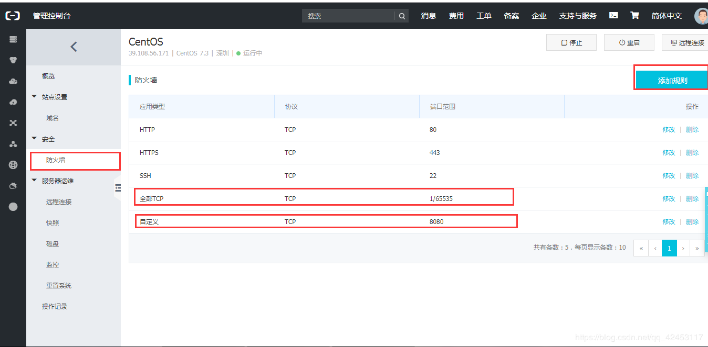
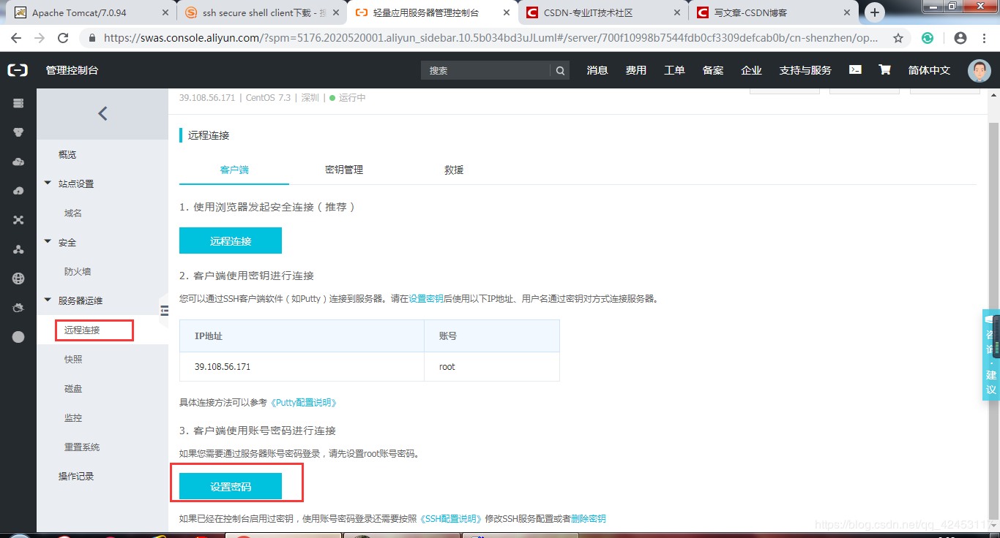
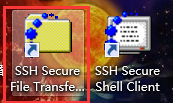
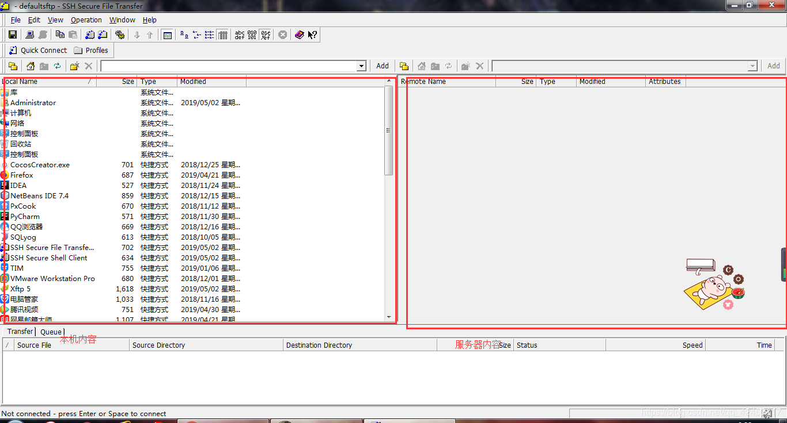
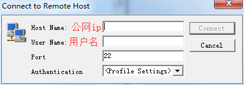
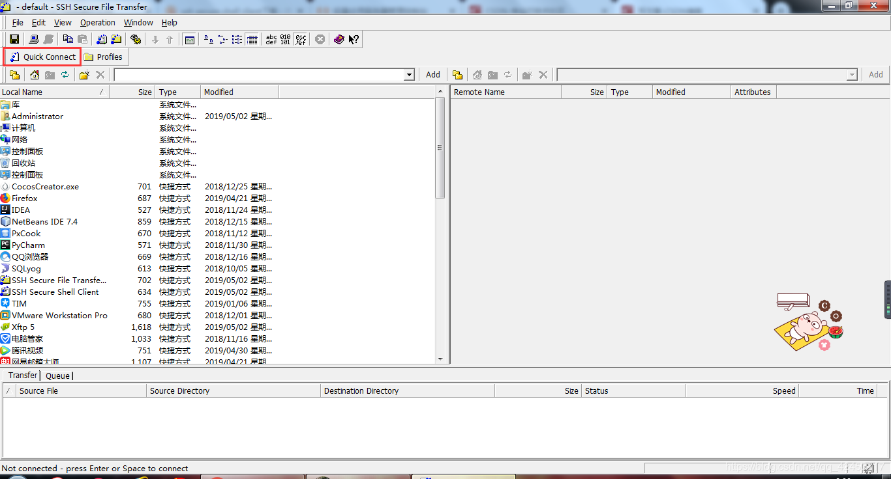

原文连接:https://www.cnblogs.com/blizzawang/p/11411714.html
在阿里云、百度云、或者腾讯云购置一台云服务器。我这里买的是阿里云的，而且操作系统选择的是Linux。
购买了之后，我们回到阿里云的首页，点击右上角的控制台，然后在左侧的导航栏中找到云服务器，点击进入，就会看到我们的云服务器了。
接着，我们对云服务器进行一些配置。

我这里添加了两个防火墙规则，如果不添加，你得端口号就会被防火墙防住。
然后我们要设置云服务器的密码。用户名默认为root。

点击设置密码。按操作一步一步地完成。
完成后我们就配置好了，如果想对域名进行解析，可以点击左侧的域名，我这里不作讲解。
接下来，我们要在云服务器上安装一些软件。首先，我们得下载SSH，全称ssh secure shell client。安装时一路next即可，安装完成后，会出现两个程序。

我们打开红色框线内的程序。

左边就是你的电脑，右边就是你的云服务器，因为还没有连接，所以右边是灰色的，接下来，我们连接到云服务器。

点击该按钮，就会弹出输入框。

输入对应的信息，然后点击Connect，会要求你输入密码，输完后确定，连接就完成了。
连接完成后，我们可以点击

此时会弹出linux的命令窗口，这时，我们就可以对云服务器进行操作了。
接下来我们介绍一下如何将软件安装到云服务器上。
首先下载好jdk和tomcat对应的linux版本压缩包
然后将压缩包通过SSH上传至云服务器，我们在左侧找到你的压缩包位置，然后鼠标右击压缩包，选择upload，底下就会出现上传进度，略微等待，上传就成功了。
- 在Linux中安装jdk
进入/root目录，将jdk解压到/usr/local目录下
输入指令
tar -xvf jdk-8u161-linux-x64.tar.gz -C /usr/local解压完毕后，需要配置jdk的环境变量，输入指令
vi /etc/profile通过vim编辑器打开profile文件，然后按下 i 进入编辑模式，在文件的末尾添加
#set java enviroment
JAVA_HOME=/usr/local/jdk1.8.0_211
CLASSPATH=$JAVA_HOME/lib/
PATH=$PATH:$JAVA_HOME/bin
export PATH JAVA_HOME CLASSPATH然后按下 esc 退出编辑模式，此时就进入命令模式，我们按下 shift + ： ，这个时候，就会要求你输入保存模式，我们输入 wq ，然后回车，文件就会保存并退出
配置完成后，我们重新加载配置文件，输入指令
source /etc/profile然后我们输入
java -version如果提示出jdk版本信息，说明安装成功了。
- 在Linux中安装tomcat
将tomcat解压到/usr/local目录下，输入指令
tar -xvf apache-tomcat-8.5.28.tar.gz -C /usr/local接下来我们开放Linux对外访问的端口8080，在默认情况下，Linux不会开放端口号
回到local目录下，输入指令
/sbin/iptables -I INPUT -p tcp --dport 8080 -j ACCEPT这样Linux就对8080端口开放了
我们来到tomcat的bin目录下，输入
./startup.sh这样，tomcat服务器就启动了， ./ 表示的是当前目录
停止服务器就输入
./shutdown.sh服务器启动后，在浏览器上输入地址http://39.108.56.171:8080/就会看到tomcat的欢迎界面了，ip地址为你的云服务器的公网ip。
如果你想将你的项目运行在云服务器上，只需将你的项目或者war包上传到云服务器的tomcat的webapps下，然后重新启动一下tomcat，你就可以通过外网访问你的项目了。